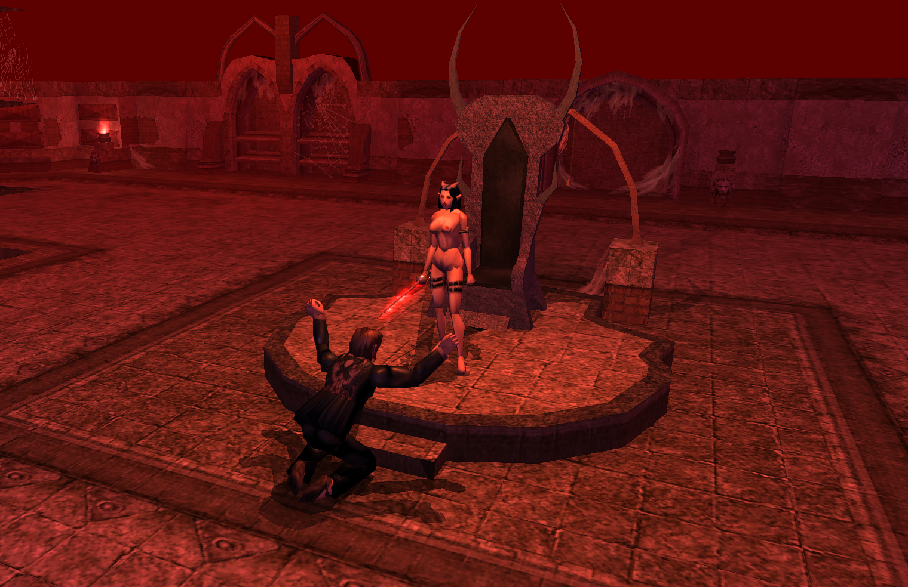
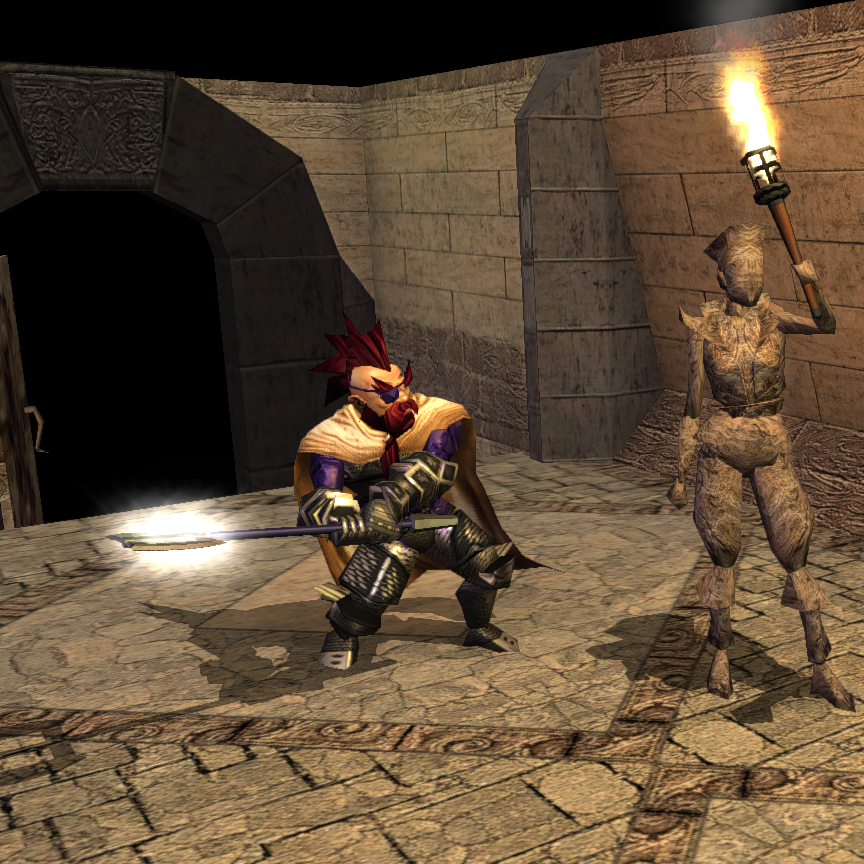

Creature Pictures
21 creatures with artwork, sorted by descending Challenge Rating.
Theoden's Chosen
Appears as: Theoden's Chosen

Summanus
Appears as: Summanus

Gandalf the Gray
Appears as: Gandalf the Gray, Gandalf the Gray


Sauron The Abhorred
Appears as: Sauron The Abhorred


Underlord of Sauron
Appears as: Underlord of Sauron

Witch King Leader of The Nine
Appears as: Witch King Leader of The Nine

Heir of Haldor
Appears as: Heir of Haldor, Heir of Haldor

Gollum
Appears as: Gollum


Khamûl The Ringwraith
Appears as: Khamûl The Ringwraith, Khamûl The Ringwraith

Elrond

The Rancid Skinner Green Mortal of Khamul
Appears as: The Rancid Skinner Green Mortal of Khamul, The Rancid Skinner Green Mortal of Khamul, The Rancid Skinner Green Mortal of Khamul

Aragorn Son of Arathorn
Appears as: Aragorn Son of Arathorn, Aragorn Son of Arathorn


Angmar
Appears as: Angmar

Gothmog Lord of Barad-Dur
Appears as: Gothmog Lord of Barad-Dur, Gothmog Lord of Barad-Dur

Basilisk King
Appears as: Basilisk King

The Balrog of Moria
Appears as: The Balrog of Moria

Sauron's Chosen Minion
Appears as: Sauron's Chosen Minion

Faramir, Prince of Ithillien
Appears as: Faramir, Prince of Ithillien, Faramir, Prince of Ithillien

Gimli
Appears as: Gimli, Gimli, Gimli

Numanan Numerocks Second Hand
Appears as: Numanan Numerocks Second Hand

Trash Fairy
Appears as: Trash Fairy